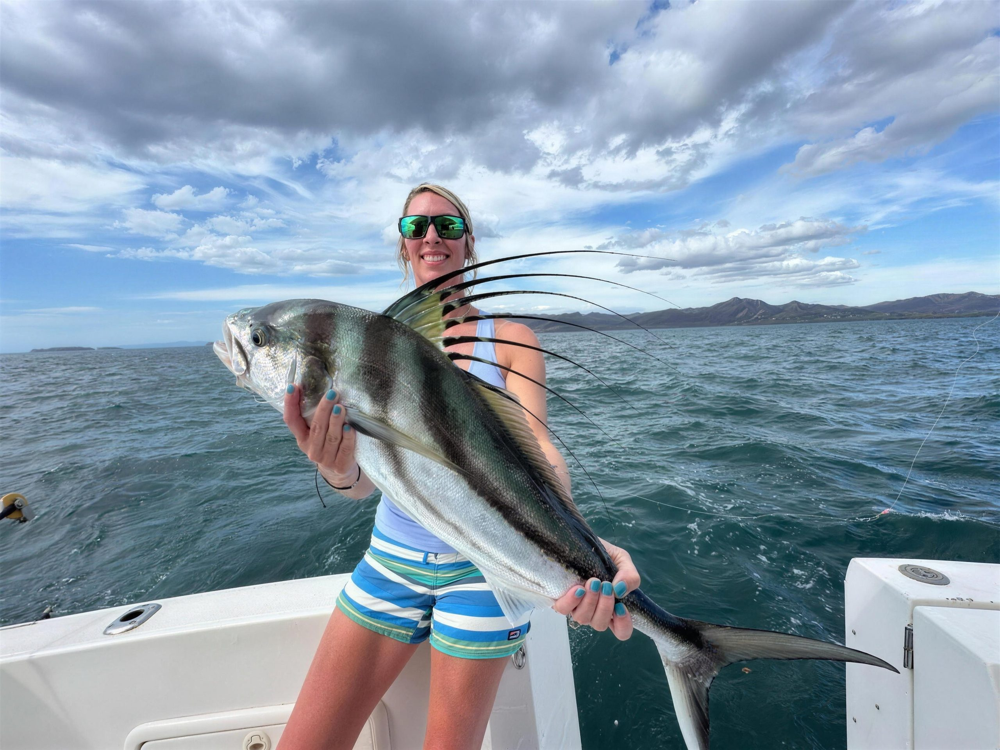
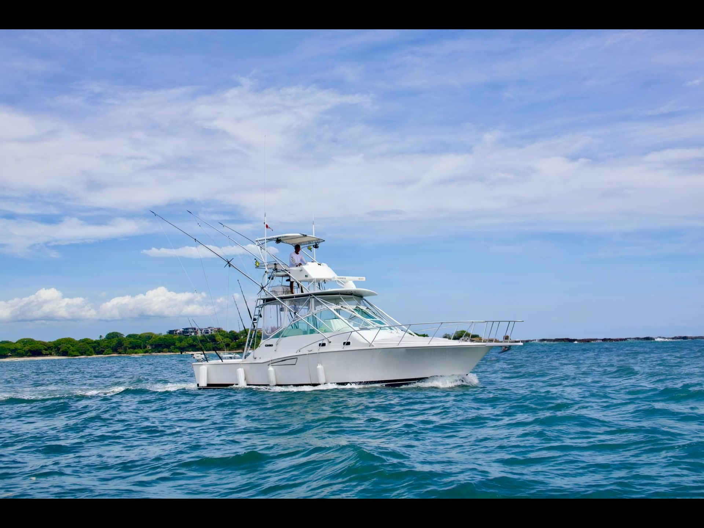
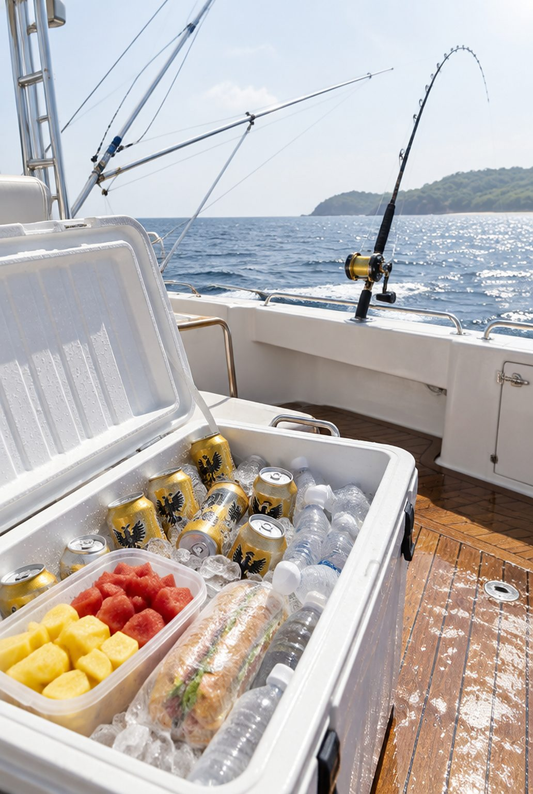
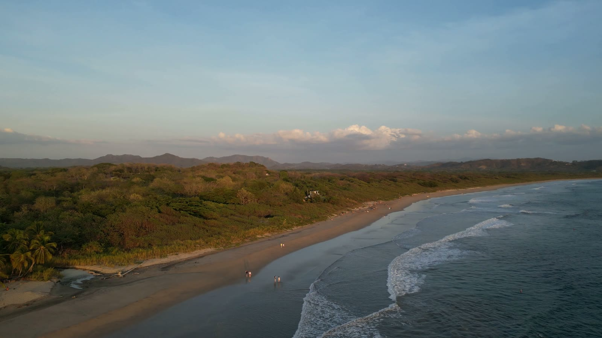
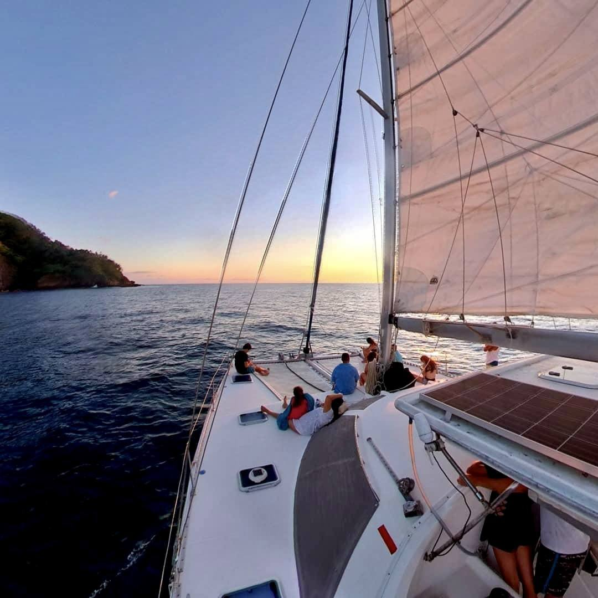

One day on the water. Let's plan yours.
Seventeen boats, two beaches, and two people who know every captain by name. This is what a Go Fish day looks like, start to finish. Scroll through it, then tell us your dates.
Pick your boat. We already picked the captain.
Every hull here is one Steve and Liisa have fished from, and every captain is one they'd put their own family with. Rates are per boat and include gear, bait, drinks and lunch on the longer days. Tell us your group and budget, and we'll tell you which one.

28' Whitewater Center Console

31' Chris Craft

35' Carolina Classic

35' Cabo Express

38' Riviera

43' Riviera Team Edition

Off the beach. No marina, no waiting.
In Tamarindo the boats launch straight off the sand, a panga runs you out and you're fishing while the town is still waking up. In Flamingo you step off the dock at the marina. Either way the crew has already loaded ice, bait and the lunch.

Forty minutes out, a thousand feet down.
About forty minutes at cruise and the bottom falls away to a thousand feet. That edge is where the sailfish, marlin, tuna and mahi live, and it is why this stretch of the North Pacific holds so many IGFA records. Half days stay inshore; 3/4 and full days make the run.


Roosters inshore. Sails and marlin off the edge.
Half days stay along the rocks for roosterfish, snapper and jacks. Go 3/4 or full and you're offshore for sailfish, marlin, tuna and mahi. Sailfish peak May to August, blue marlin November to April, and there is no month here with nothing biting.

Cold beer, a sandwich, and the story you'll tell for years.
Table fish come home with you; half the restaurants in town will cook your catch that night. Billfish go back in the water, every one. Tips aren't expected, but a crew that worked hard for you will remember 15 to 20 percent.

Golden hour over Tamarindo bay, and dinner already booked.
The boat drops you where it picked you up. Shower, sunset, a table Liisa reserved at Pangas or El Chiringuito. Tomorrow could be the zipline, the estuary with the kids, or the boat again.

The half of the family that didn't fish gets their day too.
Sixteen adventures we've done ourselves: the sunset catamaran, ATVs through the back roads, the estuary crocodiles, Rio Celeste, a spa afternoon. Most pick up from your hotel in Tamarindo or Flamingo. We book them all in one email.
Tell us your dates. Steve and Liisa answer within hours.
No payment online and no obligation. You get a straight recommendation, one boat or a whole week, and you pay the boat on the day.
Prefer to talk? Toll-free 1-888-434-7491, or gofishcr@gmail.com.


{kind=link}